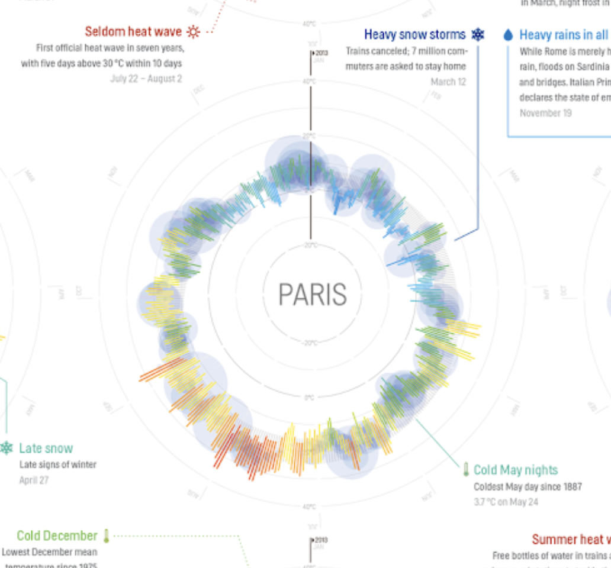
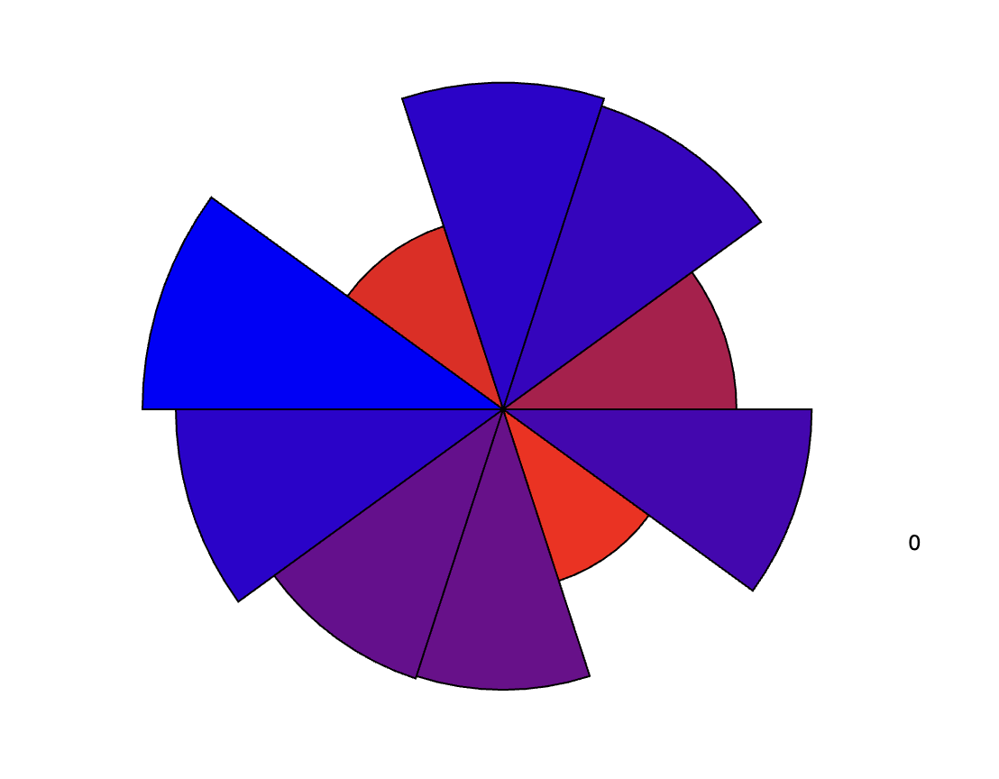

Experiment 7 - Data Visualization & Networks
Imitate
I was inspired by the many different ways temperate data can be visualized and stumbled upon weather radials:
I wanted to replicate these weather radials in a way where users can immerse themselves for how temperature can look and feel like through the interactivity aspect of my design.
Integrate
I combined the rotating temperature radial visualization with a color-changing ombre background based on the mouse position. Initially, I created a canvas and set it up to resize dynamically with the window. Then, I generated random temperature data for 365 days and randomly initialized colors for the ombre background. In the `draw()` function, I iterated through the canvas space, calculating the RGB values based on the distance of the mouse pointer from each pixel. This created a dynamic background where warmer colors appeared closer to the mouse and cooler colors appeared further away. Additionally, I utilized the temperature data to draw the radial segments. Each segment's color was determined by interpolating between the chosen RGB colors based on its temperature:
Finally, I included day labels and added a feature where pressing the "RETURN" key resets the visualization with new random temperature data and colors.
Innovate
Using this code as a starting point, I saw the potential to create something truly unique and novel by expanding its interactivity and visualization capabilities. The combination of the rotating temperature radial and the color-changing ombre background based on mouse position offers a dynamic and visually engaging experience. To enhance this further, I could integrate real-time weather data APIs to display current temperature information rather than using randomly generated data. This would provide users with relevant and up-to-date weather conditions, adding practical utility to the visualization. Additionally, I could implement interactive elements such as sliders or buttons to allow users to customize the display, such as choosing specific locations or time periods for the weather data. Moreover, incorporating animation effects like transitioning between different visualization modes or adding smooth transitions between temperature updates could elevate the visual appeal and user experience. By building upon this foundation with additional features and refinements, I could create a truly immersive and captivating weather visualization tool.
Reflection
Reflecting on the process of creating this interactive art piece, I encountered both highs and lows. One of the highs was witnessing the visual impact of combining the rotating temperature radial with the color-changing ombre background. It created a dynamic and visually striking display that responded intuitively to user interaction. Experimenting with different color combinations and temperature ranges allowed me to explore various aesthetic possibilities and find the right balance between functionality and artistic expression. Another high was the satisfaction of successfully integrating interactive elements such as resizing the canvas based on window dimensions and using mouse position to control the background colors. These interactive features added depth and engagement to the artwork, making it more immersive for the audience.
However, there were also challenges along the way. One notable low was managing the complexity of the code structure, particularly in handling the rotation of the temperature radial and positioning the day labels accurately. Balancing the rotation angle with the rendering of the radial segments and day labels required careful adjustment to ensure smooth and coherent motion. Additionally, debugging issues related to the responsiveness of the background color changes to mouse movement proved to be challenging at times. It required thorough testing and troubleshooting to identify and resolve any inconsistencies in the color transition.
Overall, creating this interactive art piece was a rewarding experience that allowed me to explore the intersection of programming, data visualization, and visual art. Despite the challenges encountered, the process was filled with moments of creativity and discovery, ultimately resulting in a captivating and engaging artwork that invites viewers to interact and explore.
Results
Each arc represents one day's temperature, combined to show a year (365 days) of temperatures.
Lengths of the arcs relates to the temperatures between 30°F (shortest) and 100°F (longest).
Numbers represent the corresponding day's temperature (shown in increments of 10).
Hover over with the mouse for an interactive color-changing background.
Press RETURN to visualize a new set and color of temperature data.